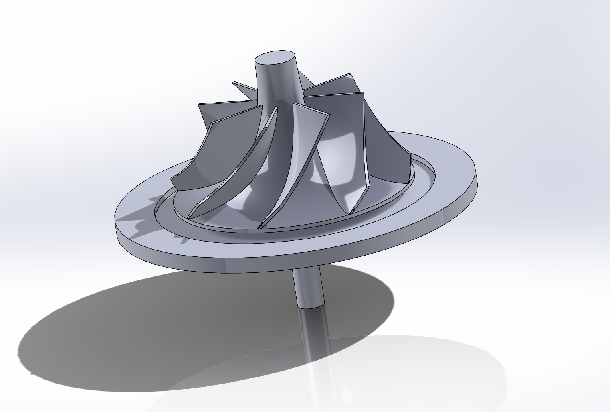
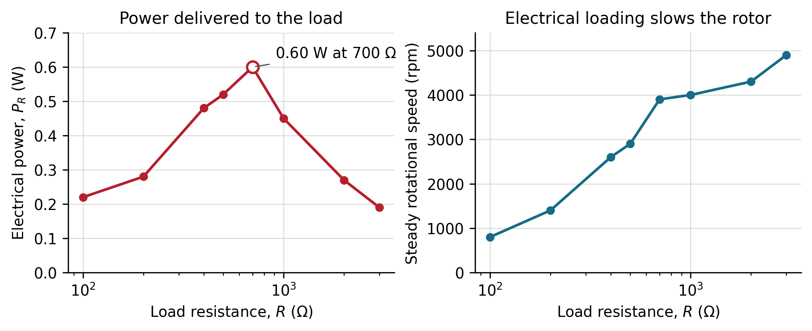

The question
Formula One’s MGU-H recovers energy from the turbocharger shaft, while also helping control turbo lag. This project reduced that architecture to a demonstrator: compressed air drives a printed turbine, coupled to a permanent-magnet DC machine and a configurable electrical load.
From modelling to the bench
A CFTurbo/SolidWorks workflow established the wheel geometry and assembly constraints. Two printed prototypes exposed the critical design issue: shaft alignment and rotor integrity dominate a small rotating system. The final wheel was mounted directly, prioritising a reliable demonstrator over a fragile intermediary shaft.
Voltage, rotational speed and current were captured with an oscilloscope, encoder and Teensy acquisition loop at 10 ms. The resulting power curve showed a broad useful operating region, with a predicted optimum near 800 Ω and a measured maximum at 700 Ω.


Takeaway
The experiment made the trade-off explicit: the value of an MGU-H-like system lies in power-system duty-cycle optimisation, not only in isolated generator efficiency. It also demonstrated the need to design measurement, alignment and maintainability as carefully as the turbine itself.
Read scientific report ↗